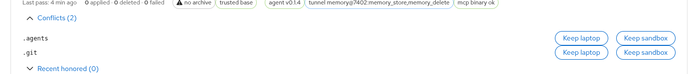
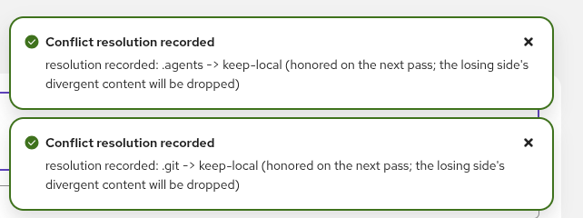
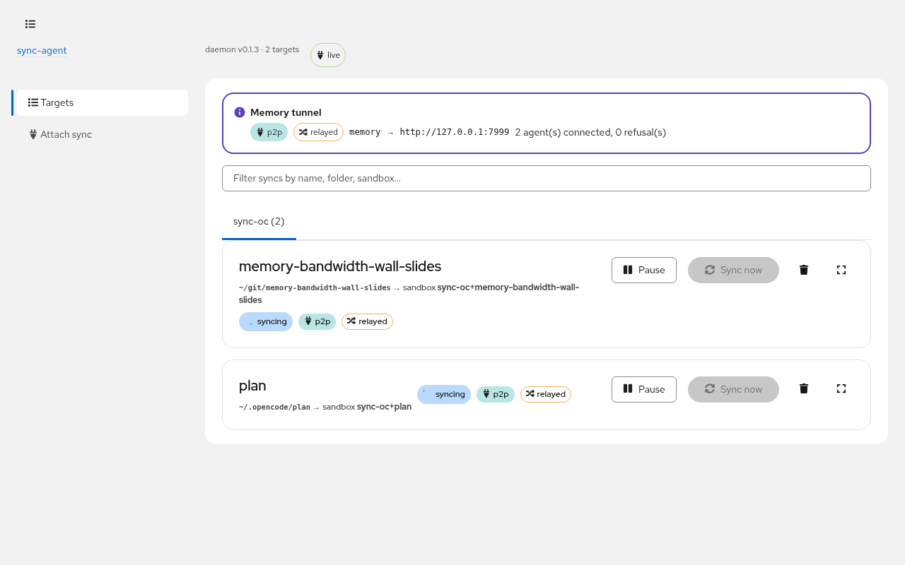

Agent infrastructure · a field guide
Your Laptop Is the
Durable Tier
sync-agent-pvc — your files and your memory, alive in every sandbox your agents live in.
Two real disks. One honest protocol.
laptop disk + sandbox disk + hostile link = one convergent tree
eformat
The gap · where work happens
Your agents run on the cluster. Your work lives on your laptop.
💻 laptop · $HOME
Git repos · the plans · the memory store the agents think with. Where you are. Where the work is.
durable📦 sandbox · PVC
OpenCode in OpenShell on OpenShift. Fast, disposable, rebuilt from GitOps any afternoon.
ephemeralI want the agents to work like they're on the laptop — while the laptop is closed.
OpenShell sandboxes on OpenShift, one PVC per sandbox. Situation, not measurement.
The gap · rejected options
Mounts, VPNs, and one-way copies each fail differently.
NFS mount
One authoritative copy; clients borrow it. Unmount it and the files are gone. Stretch it over a WAN and every tool crawls.
the network pretends to be a diskVPN into the cluster
Inbound exposure, and the cluster quietly becomes the source of truth. A rebuild afternoon becomes a migration.
the wrong side becomes canonicalOne-way copy
rsync and friends: one direction. Deletes lie to you. A conflict isn't hard — it's inexpressible.
divergence treated as an errorAll three fail for the same root reason: exactly one copy is real.
The full roast, with receipts: docs/design-faq.md in the repo.
The design · the inversion
Two real disks, both authoritative — divergence is expected state.
Survives a cluster rebuild by not caring. Stays instant when the cluster is dark.
Fast and disposable by design. Stays instant when the laptop is shut.
Neither is a cache of the other. Divergence is expected state — the protocol converges it, it doesn't prevent it.
Everything hard in this project exists only because there are two copies.
The inversion vs NFS: ARCHITECTURE.md · docs/design-faq.md.
The engine · a pass
Every pass reconciles both trees against a third: the ancestor archive.
Schematic of run_pass — one classified op per tick. Engine: crates/core · scan (blake3) · 3-way reconcile · archive.
The engine · conflicts
A simultaneous edit is undetectable — so divergence is made well-defined.
loser preserved as .sync-conflict-* · a human resolves it: dashboard or sync_resolve_conflict in the sandbox
No distributed locking. No silent last-write-wins. Nothing is ever silently merged.
A truly simultaneous edit is indistinguishable from sequential divergence — by design, docs/design-faq.md.
The engine · resolution, live
Resolving is two clicks — honored on the next pass.


The same choice works from inside the sandbox — sync_resolve_conflict.
Live dashboard, Nov 2026 — resolving this deck's own sync (.agents, .git) · docs/screenshots.
The engine · honesty about time
A ten-hour clock skew costs a re-hash — never a wrong decision.
The sandbox clock ran 10 hours behind the laptop during live testing.
Fingerprints are mtime + blake3 — but mtimes only power the local warm-scan.
Every cross-machine "did this change?" is settled by content digest against the archive base.
Sync converged anyway. A skew costs a re-hash, never a wrong decision.
Observed during live testing, Nov 2026 · ARCHITECTURE.md §load-bearing details.
The engine · honesty about failure
A pass killed at eighty percent leaves eighty percent converged.
- Writes land in staged temps .sync-agent-tmp-* → fsync → atomic rename.
- The archive advances only on a completed pass — never half-advanced.
- Killed mid-transfer: staging is hashed on arrival; a digest mismatch is a retry, never a corrupt apply.
Failure semantics, ARCHITECTURE.md §the chaos gate · engine: crates/core.
The engine · honesty about deletion
Deletion needs positive evidence — the guard halts and demands a human.
Mass deletion
A bad pair key or a stale tree looks exactly like "the user deleted everything."
pass halts · human requiredCorrupt archive
Undecodable, version-mismatched, or foreign — even its .bak gone.
safe no-base · deletes disabledEmpty overwrite
A scan that sees nothing never becomes "delete the world" — the M6 guard refuses.
refused at the engineNo-base never deletes. Deletion needs positive evidence.
M6 hardening · the chaos gate, ARCHITECTURE.md §failure semantics.
Checkpoint · the engine
Two disks, one archive, honest reconciliation.
Now — how the bytes actually travel.
Recap · five mechanisms, one rule: never lie to either disk.
The transport · P2P ladder
One outbound dial, zero inbound listeners — the relay is untrusted.
libp2p over TCP · noise · yamux · DCUtR · untrusted VPS relay — ARCHITECTURE.md §transport ladder.
The tunnel · memory broker
The agent gets my memory.
tunnel/1
- memory_search
- memory_store
unlisted → one status byte + clean close
The allowlist is the policy — default-deny, daemon-side.
Link down: writes spool (FIFO), reads fail fast to a clean miss.
Reconnect: the spool flushes FIFO — idempotent, the store is content-addressed.
M5 memory access broker · allowlist lives in the daemon config, not the sandbox · agent listener 7402, memory MCP 7999.
The control plane · sandbox MCP
The agent sees and steers its own sync — through files, not APIs.
the agent's MCP reads it: pass phases, conflicts, tunnel health — status, not bulk data
pause · resume · resolve a conflict · add an ignore — the next pass fetches and honors them
crates/agent mcp · control types in crates/proto · no bulk file data ever rides the control plane.
The attach path · M8
Your clipboard crosses the boundary.
- 1
The pod runs a daemon-managed opencode serve on a derived per-sandbox port — blake3 of the qualified sandbox id → 4100+hash%400 (4388 for plan). If it dies, the sync pass respawns it.
- 2
oattach on the laptop discovers the password from the pod serve logs — and verifies it against the live serve before launch.
- 3
The TUI runs locally, so the clipboard just works: Ctrl+V pastes a laptop screenshot into the remote session, and copy lands back on the laptop clipboard.
Only the prompt content rides the link.
The serve spawns through the runtime's mediated exec path — 0.1.8-pre.33 denies egress to oc-exec-spawned processes.
The attach path · M9
Attach without a VPN.
One outbound dial
The daemon dials OUT: daemon → relay → agent — the same topology as the sync path. Zero inbound listeners.
no inbound path to defendLoopback listener
On the laptop — same derived port, protocol /sync-agent-pvc/forward/1 — binds iff the agent link is up.
link down = port closedNothing else in the path
No openshell, no OIDC, no Route in the attach data path. The openshell forward is fallback only.
no cluster privileges neededThe attach path rides the sync link — one more protocol stream, nothing new exposed.
Dial-out only · the relay sees encrypted libp2p streams.
A war story · identities
One peer. One reservation.
two roles rode one peer — sync + tunnel listener on one identity — and the relay mis-resolved its reservations: the tunnel flapped
blake3(master key, "sync-agent-pvc/v1/tunnel") — the listener derives its own identity
sync and the forward keep the sync identity — one role, one peer, one reservation
One peer, one connection, one reservation.
identity = role — the fix that made 8/8 handshakes pass.
Operations · self-managing agents
The daemon installs, upgrades, and health-checks the agent — every pass.
- 1
First pass: the daemon bootstraps the agent onto the PVC over oc exec — binary + derived identity.
- 2
Every pass after: version drift → re-provision. Agent dirs are versioned, current symlink swapped, old ones GC'd.
- 3
Health per pass: the dashboard surfaces version, tunnel args, MCP health per target.
A sandbox rebuilt yesterday converges back to the daemon's version — without anyone looking.
Versioned agent dirs, GC'd on install · install-versioning fix in M6.
Operations · the dashboard
A real dashboard — with a dry-run before you trust it.

PatternFly UI vendored into the daemon binary · localhost only · screenshot: docs/screenshots.
Status · November 2026
M0 through M9: shipped, tested, verified.
Repo README status table, Nov 2026 · plan of record: ~/.opencode/plan/sync-agent-pvc.md (local).
Your Laptop Is the Durable Tier
Two real disks.
One honest protocol.
sync-agent-pvc — the laptop stays the durable tier; sandboxes come and go.
design FAQ · the full NFS roast · ARCHITECTURE.md
eformat
Backup · the NFS roast
"You just reinvented NFS" — the full answer.
"You just reinvented NFS."
— Noel, opening question
NFS answers "where do the files live?" — one place, and you go to them. We answer: the files live in two places, the network between them is hostile, and here's the protocol for them to converge anyway.
docs/design-faq.md · the full roast with live receipts.
Backup · failure semantics
The chaos gate: every failure, and what the system does.
| Failure | Behavior |
|---|---|
| Daemon killed mid-pass | staged temps only · archive not advanced · next pass re-plans the remainder |
| Agent/pod killed mid-transfer | staging hashed on arrival · digest mismatch = retry, never a corrupt apply |
| Corrupt archive (and its .bak) | safe no-base: full rescan, deletes disabled, archive re-seeded |
| Cluster / API outage | pass errors are per-target · laptop unaffected · resumes when reachable |
| Mass deletion | guard halts the pass and demands a human |
| Tunnel down | writes spool (FIFO, idempotent) · reads miss cleanly · flush converges on reconnect |
| Unknown service / stranger peer | one status byte + clean close · counted in /api/tunnel refusals |
M6 chaos gate · ARCHITECTURE.md §failure semantics.
Backup · state layout
Where everything lives.
- laptop
- ~/.local/state/sync-agent-pvc/pairs/<pair-hash>/ — ancestor archive + scan caches
- laptop
- ~/.config/sync-agent-pvc/config.toml · master key, 0600
- sandbox
- /sandbox/.sync-agent/agents/<version>/ — versioned binaries, current symlink, GC'd
- sandbox
- /sandbox/.sync-agent/agent/<hash>/ — digest-keyed staging
- both
- <root>/.sync-agent/ — scanner-skipped: control files, tunnel spool · .syncignore lives beside it
ARCHITECTURE.md §state layout · .syncignore is synced content — edit it on either side.
Backup · configuration
The whole laptop config, for one target.
# ~/.config/sync-agent-pvc/config.toml [daemon] bind = "127.0.0.1:7391" # dashboard + API, localhost only [tunnel] enabled = true [[tunnel.services]] # the default-deny allowlist name = "memory" upstream = "http://127.0.0.1:7999" # the laptop's memory MCP agent_port = 7402 spool_tools = ["memory_store", "memory_delete"] [[targets]] name = "plan" sandbox = "sync-oc+plan" # matches the agent's --sandbox-id root = "~/code/plan" # laptop side root_remote = "/sandbox/.opencode/plan" # PVC side transport = "p2p" relay = "/ip4/VPS/tcp/4001/p2p/RELAY_PEER" tunnel_services = ["memory"] # opt this target into the tunnel
README quickstart · the sandbox side needs no manual setup — the daemon bootstraps it on the first pass.
Backup · code map
One Rust workspace, four crates.
crates/proto
Wire framing: MAGIC handshake, bounded-length CBOR/bincode frames · tunnel protocol · control types.
deps: none
crates/core
Sync engine: blake3 scan · 3-way reconcile · ancestor archive · excludes (vendored copia cores).
deps: proto
crates/agent
Remote agent: serve (exec/stdio) · p2p driver · tunnel client + spool · MCP server · self-installing binaries.
deps: proto
crates/cli
Laptop daemon: per-target pass loops · localhost API + vendored PatternFly UI · P2P/exec transports · tunnel service + allowlist.
deps: core → proto
Rust 2024, one workspace · 294 tests green · clippy clean.
Backup · cluster prep
Cluster prep is a runbook, not a project.
- OpenShell on OpenShift via GitOps chart — deploy/chart/, rebuilt any afternoon by design.
- SCC + Route for the sandbox pod; the dashboard never leaves localhost.
- Egress: exactly one outbound allowance — the VPS relay. No inbound paths, ever.
docs/m0.0-runbook.md · deploy/chart/ · OpenShell on ocp5-1.